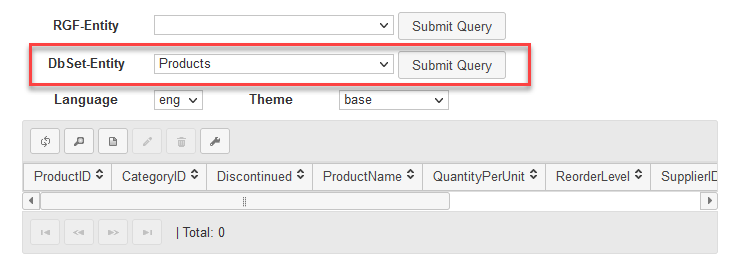
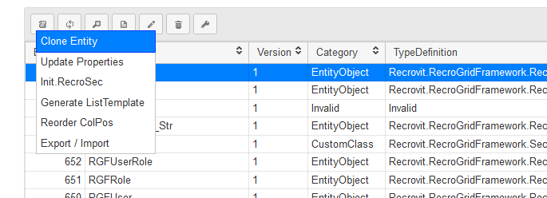

Entity
The RecroGrid Framework performs the display of data and operations on them based on Entities. Entities are a group of properties that need to be handled together during display and editing. The framework can automatically generate entities based on the logical data model, but they can also be created at the code level at compile or runtime. For quicker usage, these entities are stored in the system's database, and they can be manually edited through the RGF Admin dashboard (/RGF/Admin).
The various entities significantly influence the operation. Entities describe how they are constructed from different data fields or properties. In these properties, it is determined what data type a field has, how it is connected to other entities. It is here that the configuration is set for where and with what control it will appear on the user interface. Numerous pre-defined or custom parameters can be linked to entities and their properties, influencing their functionality.
Typically, we generate the entity from a class in the data model associated with an Entity Framework DBContext. If the system encounters an entity reference that is available based on the model but has not been stored yet, it automatically generates it at runtime. However, this strategy is to be avoided. It is recommended to always pre-generate entities based on DbSet-Entity in the RGF Admin dashboard. For portability reasons, entities can be synchronized between different databases and installations using the built-in export/import and installation features.

Entities can be associated with version numbers, so an entity related to the same logical model can vary significantly in terms of appearance or functionality. A typical example is displaying a data structure with a different column layout or form view, and for convenience, it needs to be directly linked to a separate menu item. Implementing this does not require separate program code; the system administrator can perform this task on the Admin dashboard for ease of use.
There is an option to copy an entity, so you only need to set the differences. This can be done through the Entities List Functions/Clone menu.
